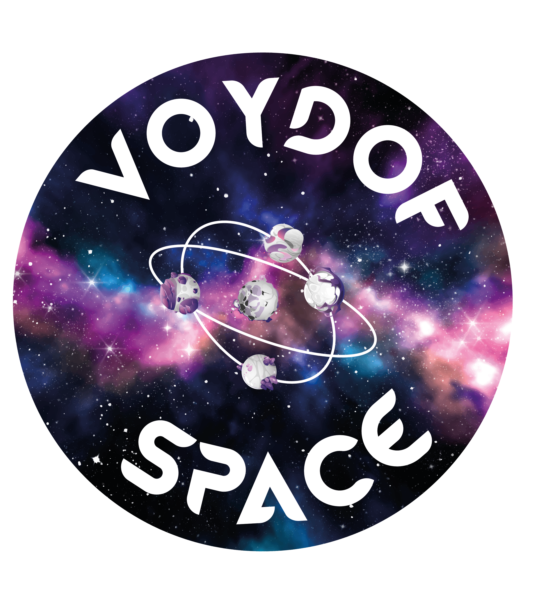

Voydof Space immerses players in a science fiction universe where they take on the role of space smugglers striving to become the most influential. To achieve this goal, each player must complete a variety of missions, from collecting extraterrestrial creatures on different planets, engaging in black market trafficking, battling other players, to exploring the far reaches of space. Through deck-building and strategy mechanics, players create and enhance their own deck to optimize their actions. This game offers a tactical and competitive challenge, perfect for science fiction and adventure enthusiasts.
The first phase of development involved defining the universe and mechanics of Voydof Space. We envisioned a world where each player embodies a space smuggler seeking glory and power. This concept shaped the game's mechanics, such as deck-building and strategy, to provide players with an immersive and competitive experience. Special attention was given to player interactions, allowing for varied tactical choices and diverse game scenarios.

After establishing the game's universe, we explored several artistic directions to reflect the themes of science fiction and smuggling. We chose a futuristic aesthetic with purple and gold tones to create a distinct graphic identity. Every visual element was carefully designed to enhance the atmosphere of the game, from the cards to the board elements, including the game box.
To bring our artistic vision to life, we used a generative AI that allowed us to create the visuals for the cards, board, and game box. This technology helped us quickly experiment with different styles and compositions, as we had to submit the academic project within two months. Thanks to this method, we were able to obtain coherent and original graphic elements that immerse players in the world of Voydof Space.
Once the visuals were finalized, we began the physical production of the game. The tokens were 3D printed using a laser printer, adding an immersive and professional touch. Each token, card, and board element was created to enhance the game's aesthetic and quality. This attention to detail ensured a consistent quality between the game mechanics and its visual appearance.
Once the prototype was in hand, we began an extensive testing phase to assess the mechanics, balancing, and flow of the gameplay. These tests, conducted with various groups of players, allowed us to fine-tune the rules and improve the gaming experience. We are continuing to refine the rules to perfect the gameplay and ensure optimal balance before considering commercialization.
What started as an academic project has evolved into a true entrepreneurial adventure. Encouraged by feedback from Ludik, a major player in the board game industry in New Caledonia, we embarked on a process of thorough testing to refine the rules and prepare Voydof Space for the market. This interest has strengthened our motivation to make this project a commercial success.